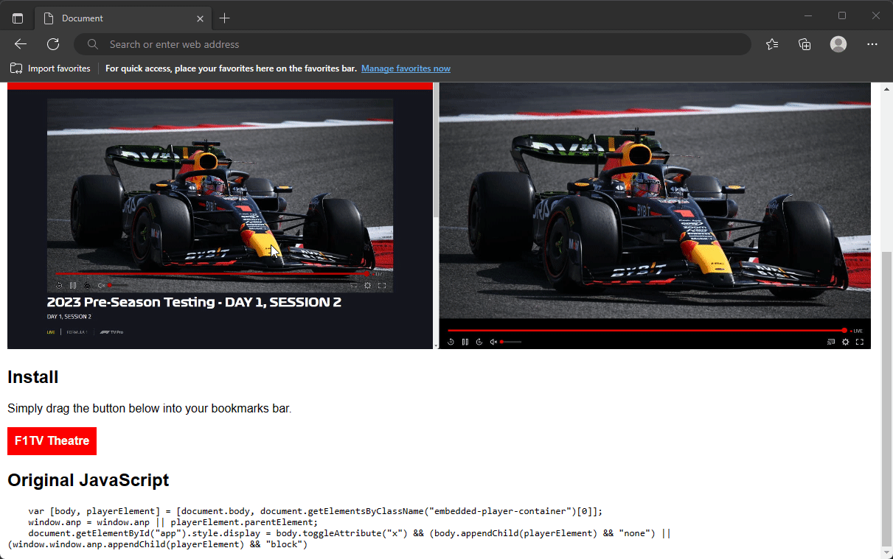

This is a bookmarklet that lets you put the F1TV web player into "theatre mode".
I like to watch F1 practice while doing other things on my PC, but the F1TV player makes this extremely inefficient.
There's a lot of bloat around the player, causing the actual player to be very small in the browser window.
This "bookmarklet" executs a bit of JavaScript that basically hides the entire website, and makes the player stretch across the entire browser window.
Simply click the bookmark to toggle between normal website and theatre mode.
Simply drag the button below into your bookmarks bar.

var [body, playerElement] = [document.body, document.getElementsByClassName("embedded-player-container")[0]];
window.anp = window.anp || playerElement.parentElement;
document.getElementById("app").style.display = body.toggleAttribute("x") && (body.appendChild(playerElement) && "none") || (window.window.anp.appendChild(playerElement) && "block")